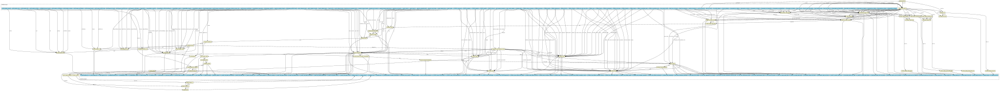

A CWL-based pipeline for processing ChIP-Seq data (FASTQ format) and performing: - Peak calling - Consensus peak count table generation - Detection of super-enhancer regions - Differential binding analysis On the respective GitHub folder are available: - The CWL wrappers for the workflow - A pre-configured YAML template, based on validation analysis of publicly available HTS data - Tables of metadata (``EZH2_metadata_CLL.csv`` and ``H3K27me3_metadata_CLL.csv``), based on the same validation analysis, to serve as input examples for the design of comparisons during differential binding analysis - A list of ChIP-Seq blacklisted regions (human genome version 38; hg38) from the ENCODE project, which is can be used as input for the workflow, is provided in BED format (``hg38-blacklist.v2.bed``) Briefly, the workflow performs the following steps: 1. Quality control of short reads (FastQC) 2. Trimming of the reads (e.g., removal of adapter and/or low quality sequences) (Trimmomatic) 3. Mapping to reference genome (HISAT2) 5. Convertion of mapped reads from SAM (Sequence Alignment Map) to BAM (Binary Alignment Map) format (samtools) 6. Sorting mapped reads based on chromosomal coordinates (samtools) 7. Adding information regarding paired end reads (e.g., CIGAR field information) (samtools) 8. Re-sorting based on chromosomal coordinates (samtools) 9. Removal of duplicate reads (samtools) 10. Index creation for coordinate-sorted BAM files to enable fast random access (samtools) 11. Production of quality metrics and files for the inspection of the mapped ChIP-Seq reads, taking into consideration the experimental design (deeptools2): - Read coverages for genomic regions of two or more BAM files are computed (multiBamSummary). The results are produced in compressed numpy array (NPZ) format and are used to calculate and visualize pairwise correlation values between the read coverages (plotCorrelation). - Estimation of sequencing depth, through genomic position (base pair) sampling, and visualization is performed for multiple BAM files (plotCoverage). - Cumulative read coverages for each indexed BAM file are plotted by counting and sorting all reads overlapping a “window” of specified length (plotFingerprint). - Production of coverage track files (bigWig), with the coverage calculated as the number of reads per consecutive windows of predefined size (bamCoverage), and normalized through various available methods (e.g., Reads Per Kilobase per Million mapped reads; RPKM). The coverage track files are used to calculate scores per selected genomic regions (computeMatrix), typically genes, and a heatmap, based on the scores associated with these genomic regions, is produced (plotHeatmap). 12. Calling potential binding positions (peaks) to the genome (peak calling) (MACS2) 13. Generation of consensus peak count table for the application of custom analyses on MACS2 peak calling results (bedtools) 14. Detection of super-enhancer regions (Rank Ordering of Super-Enhancers; ROSE) 15. Differential binding analyses (DiffBind) for: - MACS2 peak calling results - ROSE-detected super-enhancer regions
{kind=link}